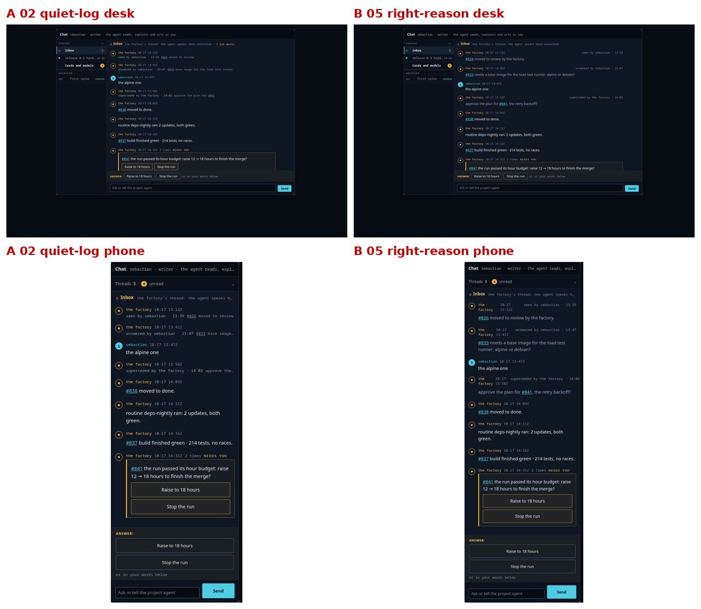
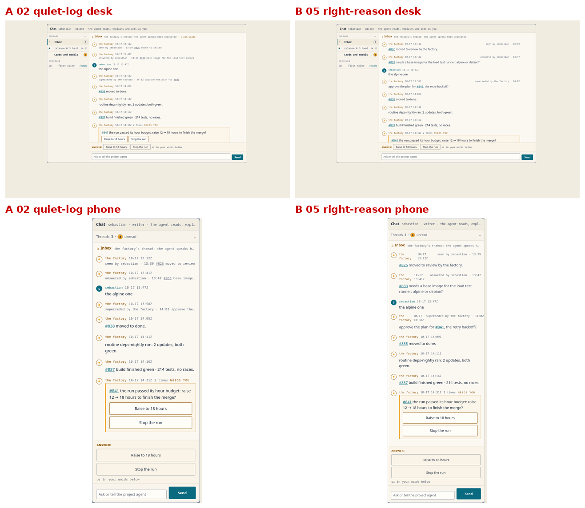
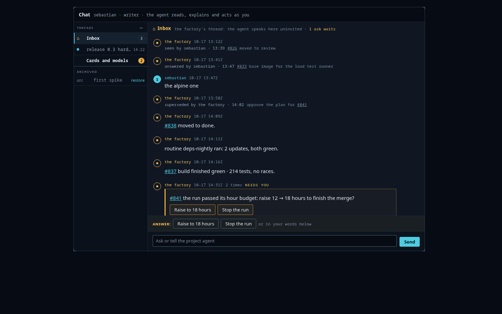
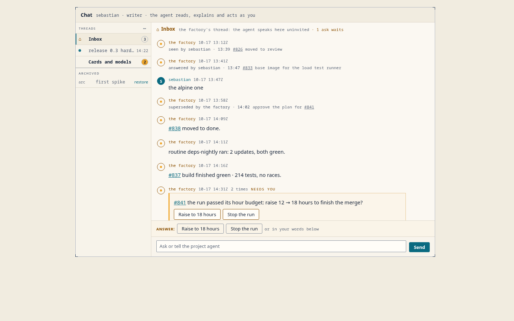
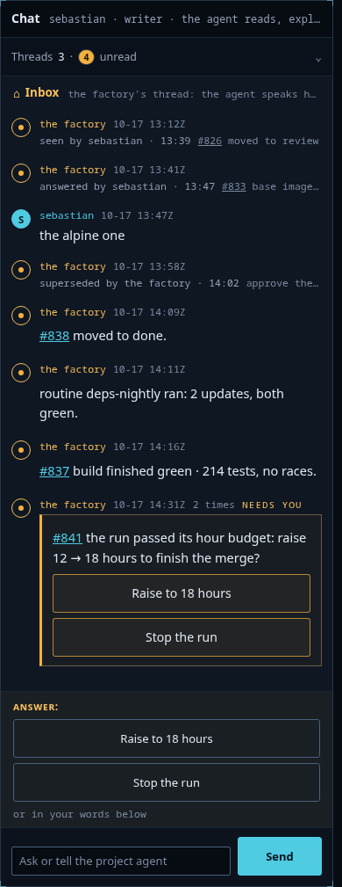
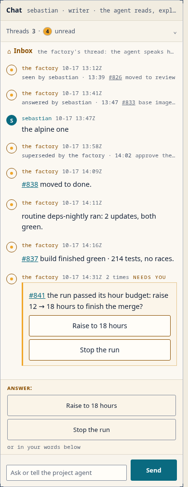
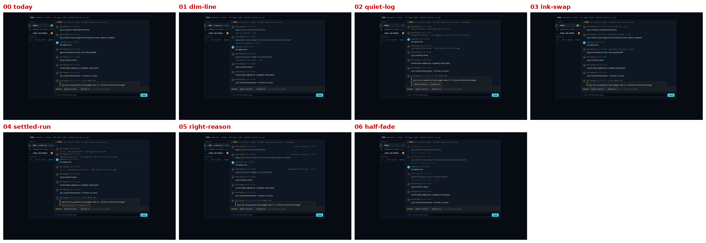
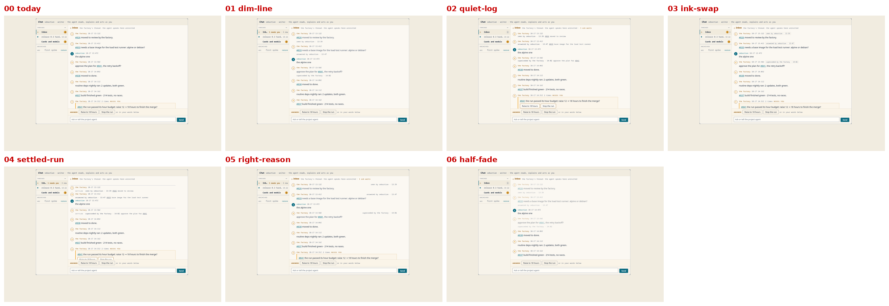
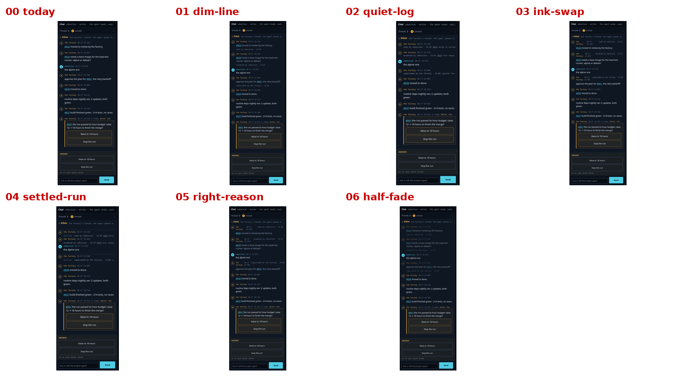
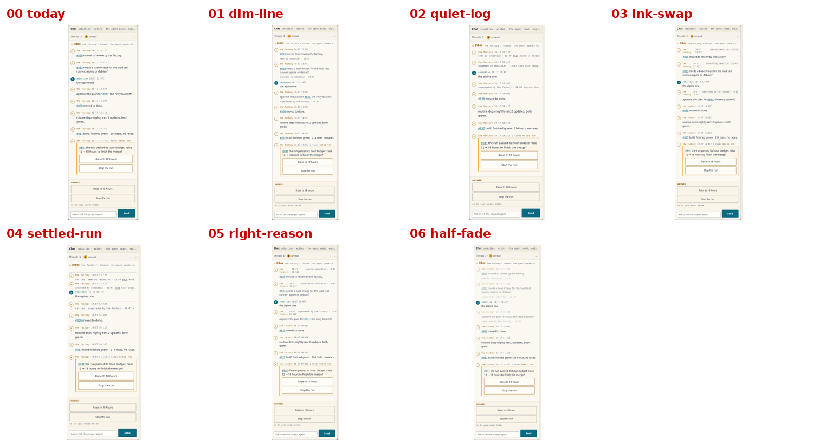

The inbox thread is where the factory pokes its owner, and today every poke looks equally current forever. The rule was ruled before this round (item 292: a settled row carries a reason of word, actor and time; the badge splits into open asks and unseen new rows; amber stays only on open asks). This round shaped the form: how far a settled row recedes, where the reason sits, what the badge looks like. The brief set the limits; six candidates were built as real markup over the console's own stylesheet, no generation. The notes hold the run, the scores and the claims the director checked.
The recommendation: 02, quiet-log — provisional. The settled row folds to one line, the reason in grey monospace first, the first words of the message after it: the thread's history becomes an index of what passed, and the open ask stands alone at full voice. The badge is two pills, amber for the open asks, bordered for the unseen new rows. Both critics picked it in the compare loop (9 of 10 each), flipping their first-round preference for the dimmed full row once the dividing question was explicit: what happens when the history grows. Runner-up: 05, right-reason — the full row dimmed, the reason at the right edge of the name line, now wearing the same two-pill badge. Sebastian is away; his pick overrides and becomes the C-entry in the design decisions.






One behavior rides with the pick: a folded row expands on click or tap, so the audit trail stays one gesture away — both critics named it, and it answers the one thing the fold gives up. Two claims were checked and dismissed: the light-theme greys measure 7.0:1 and 5.2:1, above the floor, and nothing clips on the phone.
00 is today's console, the baseline: nothing settles, the badge counts four unseen.




Scores out of 10, first loop over all six, then the compare. The badge was the one verdict that never moved: the two-pill form won every round.
| candidate | Gemini | GLM | compare · Gemini | compare · GLM |
|---|---|---|---|---|
| 00 today (baseline) | — | — | — | — |
| 01 dim-line | 8 | 5 | — | — |
| 02 quiet-log | 7 | 9 | 9 | 9 |
| 03 ink-swap | 4 | 3 | — | — |
| 04 settled-run | 3 | 6 | — | — |
| 05 right-reason | 9 | 8 | 6 | 5 |
| 06 half-fade | 6 | 6 | — | — |
Five critic calls at $0.03, $0.15 of the $3 cap. No images generated: the candidates are real markup over the console's stylesheet, shot in a browser.